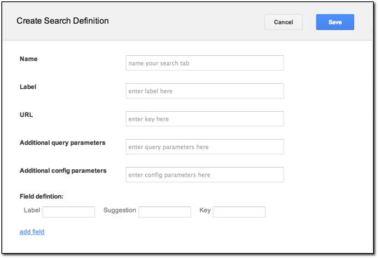

Google Earth Enterprise Documentation Home | GEE Server administration
Create Search tabs
You can create search tabs in GEE to add search services that let you query GEE Server using Google Earth Enterprise Client (EC) or from a Google Map (http://maps.google.com/).
Search tabs allow Google Earth EC or Google Maps users to:
- Replace the standard search tabs in Google Earth EC.
- Search 2D or 3D databases created with Google Earth Enterprise Fusion.
- Access other databases not related to Google Earth Enterprise Fusion (such as geocoders, Google Search Appliance, and so on).
- Access external search servers (such as a real estate search).
For example, if you have a database of property locations that contains specific information that your users need, you can create a search tab called Property Search and configure it to search for locations in your property database, even if that database is stored on another server.
You can also create search tabs with multiple fields. For example, you might create a Driving Directions search tab with From and To labels in the Create Search Definition dialog. You populate the URL field with the custom service that returns the actual directions.
The Search tabs page of Google Earth Enterprise Server allows you to pre-configure the search tabs to be used for any Fusion database. You define all of the search tabs you need using the Search tabs page, and then you select one or more search tabs for a specific database when you publish using the Databases page. See Publish databases and portables for details.
Define a new search tab
To define a new search tab:
- In the GEE Server Admin console, click Search tabs.
- Click Create new. The Create Search Definition dialog appears.

- Enter a unique Name for your search tab.
- Enter a Label that will display as the name of the search tab in the client.
- Provide a URL.
- POISearch
- /gesearch/FederatedSearch
- /gesearch/CoordinateSearch
- /gesearch/PlacesSearch
- /gesearch/ExampleSearch
- Optionally provide additional query parameters.
- Optionally provide additional config parameters.
- Specify the following field parameters:
- Label: Label of the search box.
- Suggestion: Suggestion to the user of what to search for.
- Key: The parameter name that the value in the text box will be assigned when the search is submitted.
Optionally click add field to add another set of search field parameters.
- Click Save.
The search tab is ready for you to add to your database. See Publish databases and portables for details.
if you want to reference a Google Earth Enterprise Server plug-in for the search tab, enter the name of the plug-in. The following plug-ins are available:
The syntax is key1=value1&key2;=value2. For example, flyToFirstElement=true&displayKeys;=location flies to the first element of your search results and displays the Location key in the results. Google Earth EC must be able to understand and respond to these key/value pairs, so you must be very familiar with your search application to use this field.
Caution: Any web service, servlet, or web application you configure the search tabs to query must return valid KML to Google Earth EC. For Google Maps, it must return valid JavaScript in the specified structure.
Customize search tab style in Google Earth EC
You may want to customize the appearance of the search tabs as they display in Google Earth EC. You can edit /opt/google/gehttpd/htdocs/earth/supplemental_ui.html to change the style and various elements for the search form that appears. The changes you make are then included in the database at the time you publish.
To customize the style and elements of a search tab:
- Make a backup copy of
/opt/google/gehttpd/htdocs/earth/supplemental_ui.htmland open your renamed file for edit. - In the HTML code, update the style and display elements to customize your search form.
- Save the HTML file with the name you want to use for your search tabs, for example,
/opt/google/gehttpd/htdocs/earth/search_supplemental_ui_MySearchTab.html. - Publish your database with the selected search tab(s).
- View your database in Google Earth EC.
Search tabs now appear with the style and element settings that you customized.